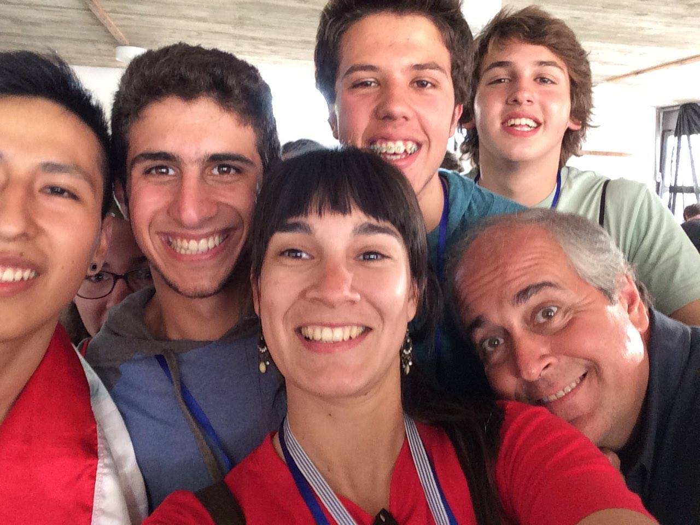

Daniella C. Bardalez Gagliuffi
Kalbfleisch Postdoctoral Fellow at the American Museum of Natural History investigating brown dwarfs and binary systems.
Research
As an observational astronomer, I analyze near-infrared data to constrain statistics on the local population of low mass stars and brown dwarfs to contrain their formation. I am interested in understading the evolution of cool atmospheres across low mass stars, brown dwarfs and giant planets.

Our local solar neighborhood is the prime sample to constrain the occurrence of ultracool dwarfs and their subpopulations. I have focused on the census of M7-L5 dwarfs which are potential hosts to T dwarf companions. However, the literature sample of M7-L5 dwarfs is only 66-79% complete, with a severe incompleteness of late-M dwarfs. Completing this sample is crucial to constrain the initial mass function across the hydrogen burning limit and the formation mechanisms of ultracool dwarfs.
Outreach
 Part of my job as a scientist is to make science accessible to women and underrepresented minorities to achieve a more equitable and diverse scientific community. With this goal in mind, I have participated in numerous outreach events, as volunteer and panelist. I have also served as a science instructor in summer camps, both in the US and Latin America. At UCSD, I created a near-peer mentoring program, "mentoring Women in Physics" (mWIP), to connect female undergraduate and graduate students in Physics and provide support to women in their early careers. Recently, I was interviewed by Physics girl about my research in brown dwarfs.
About Me
I am an observational astronomer, originally from Lima, Peru. I earned my BS in Physics at MIT and my PhD at UC San Diego. I enjoy cooking (and eating), traveling, playing the guitar and knitting. I speak Spanish, English, French, and Python.